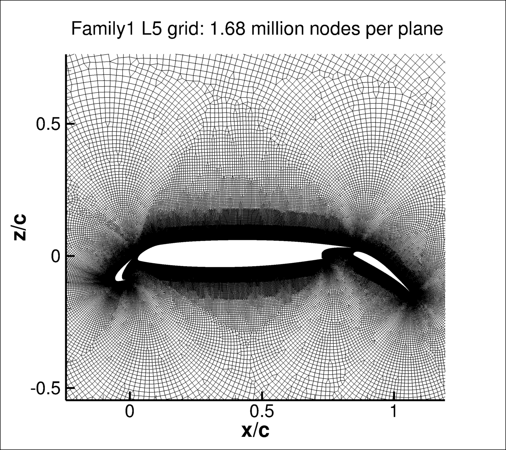
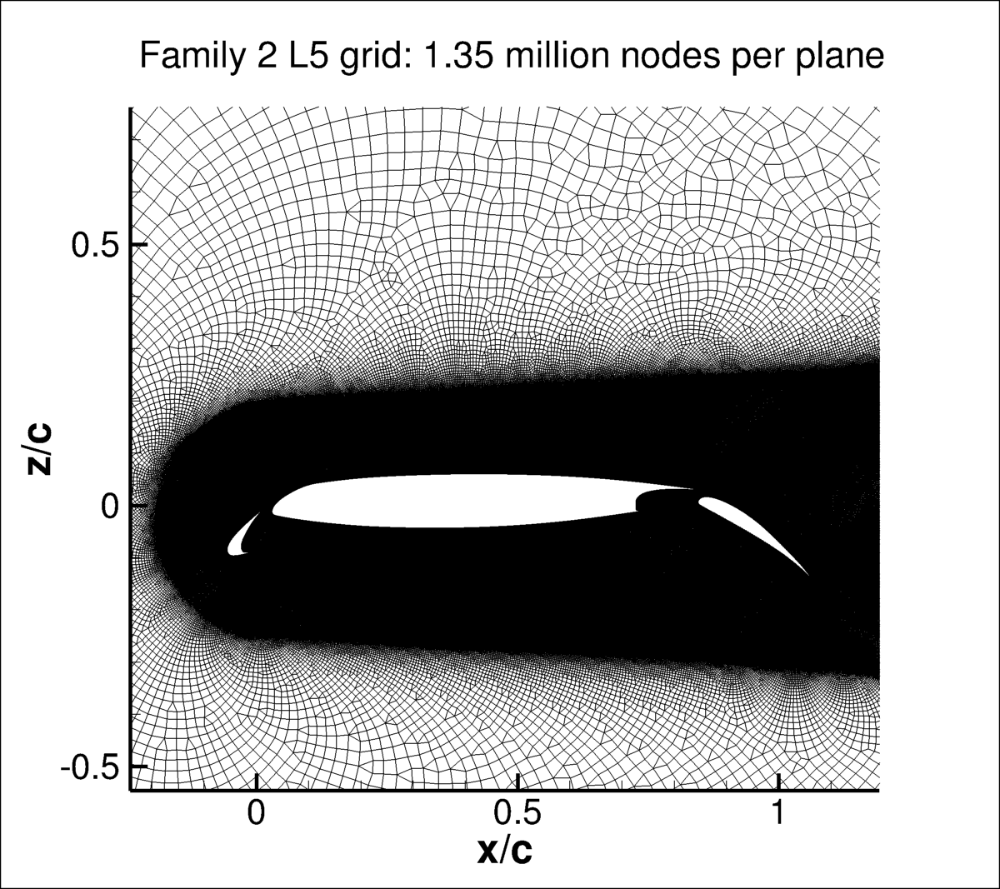

|
Langley Research CenterTurbulence Modeling Resource |
Return to: 2D Multielement Airfoil Verification Case Intro Page
Return to: Turbulence Modeling Resource Home Page
Geometry and Grids - 2D Multielement Airfoil Case
The geometry for this case
(taken as a section of the CRM-HL wing) was defined for the
Mesh Effects for CFD Solutions
special session at AIAA Aviation 2020, sponsored by the GMGW committee.
The units in the geometry model files are meters.
The local chord (measured with the flap and slat stowed) is 1 meter.
The slat and flap deflection angles are 30 and 37 degrees, respectively.
The deflected geometry is given as:
1. FAMILY 1 UNSTRUCTURED GRIDS FROM AEDC
Several different grid families are provided for this case. In this section,
a series of seven 2-D unstructured grids are given, courtesy of James Masters,
Arnold Engineering Development Complex. An attempt was made to maintain the grids in a similar
"family," although this can be difficult to guarantee for fully unstructured grids.
The intent was to approximately double the 2-D planar point count (N) between
successive grid levels. The resulting unstructured grids for Family 1 came out as follows:
In all cases, the farfield extent was maintained at about 1000c from the airfoil.

Note: all grids are given with two planes (separated by unit distance y=1). The x-direction
runs downstream, the z-direction is up, and the y-direction runs into the page.
AFLR3 (UGRID) VERSION OF
FAMILY 1 UNSTRUCTURED GRIDS
Download the big-endian AFLR3 grids and corresponding mapbc files (with FUN3D's BC numbering) here:
CGNS VERSION OF
FAMILY 1 UNSTRUCTURED GRIDS
The unstructured Family 1 grids are also available as CGNS files.
Note that the BCs written inside the CGNS files are for guidance only, and may not reflect
the appropriate BCs needed for your application.
To read/write CGNS files, (free) software
may be necessary if your pre/post-processing tools do not already handle it.
See: CGNS Website for details.
Download the grids in CGNS format (gzipped) here:
2. FAMILY 2 UNSTRUCTURED GRIDS FROM NASA AMES
A set of seven unstructured grids, courtesy of Jacob Wagner and Cetin C. Kiris of NASA Ames, are provided here.
This set of grids have different spacings on the airfoil surface than Family 1 (paticularly more clustering
near element trailing edges), along with more clustering
in the airfoil wake. The first cell height above the wall and stretching factors are intended to be consistent between the
two families. The farfield extents are the same.
The grid sizes for Family 2 are as follows:

The grids are given with two planes (separated by unit distance y=1). The x-direction
runs downstream, the z-direction is up, and the y-direction runs into the page.
They are only provided in AFLR3 format.
Download the big-endian AFLR3 Family 2 grids and corresponding mapbc files (with FUN3D's BC numbering) here:
3. STRUCTURED OVERSET GRIDS FROM NASA AMES
A set of seven structured overset grids, courtesy of POC Cetin C. Kiris of NASA Ames, are provided here. This set of grids
was "custom tailored" (by hand) to yield wake clustering that is appropriate for this test case.
Total number of solution points per plane range from approximately 46,000 to 3.2 million.
CFD results on these grids are currently not provided on this website.
4. ADAPTED GRIDS FROM MIT
The adapted meshes are generated by MIT using an output-based mesh adaptation algorithm to minimize numerical
error in drag for the SA-neg turbulence model at alpha=16 deg, and are not suitable for any other angle of attack
or turbulence model. These meshes were used in
AIAA paper 2021-1080 and the
journal version of the same paper,
where multiple different discretizations (both Finite Volume and Finite Element) demonstrated
reduced numerical error relative to expert-crafted meshes.
The total number of nodes (over a sequence of 7 grids) range from approximately 4k to 350k. The meshes are ASCII ugrid files,
fully 2D, with a farfield of 1000 chords.
Note: Due to the intentional lack of orthogonality in the boundary layer of these meshes, the use of approximate minimum distance
function calculations are particularly ill-advised. Please see the
min dist function description on the Spalart-Allmaras page
for a rigorous description of accurate minimum distance function calculations.
Return to: 2D Multielement Airfoil Verification Case Intro Page Return to: Turbulence Modeling Resource Home Page
Recent significant updates: Responsible NASA Official:
Ethan Vogel
Grid Level
N
Approx delta y+ at walls
Approx stretching rate (r)
L1 (coarsest)
173958
2
1.25
L2
294161
1.4
1.17
L3
508099
1.0
1.12
L4
930671
0.7
1.08
L5
1679982
0.5
1.06
L6
3227904
0.35
1.04
L7 (finest)
5980721
0.25
1.03
The corresponding mapbc files (with FUN3D's BC numbering) all look like the following:
crmhl_x.mapbc.
Grid Level
N
L1 (coarsest)
134852
L2
246762
L3
379219
L4
740869
L5
1353167
L6
2550989
L7 (finest)
4792411
The corresponding mapbc files (with FUN3D's BC numbering) all look like the following:
2DMEA_RevM_wake_x.mapbc.
08/07/2024 - added adapted grids from MIT
06/10/2021 - added unstructured Family 2 grids
02/25/2021 - added structured overset grids
Page Curator:
Clark Pederson
Last Updated: 02/10/2025